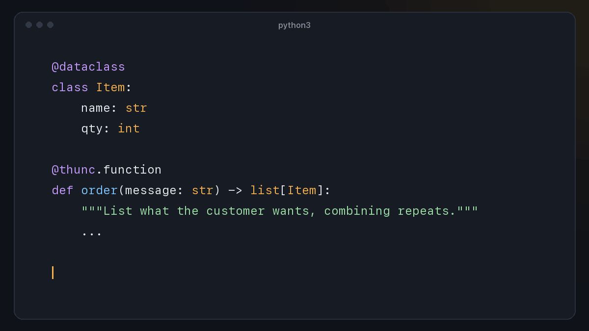
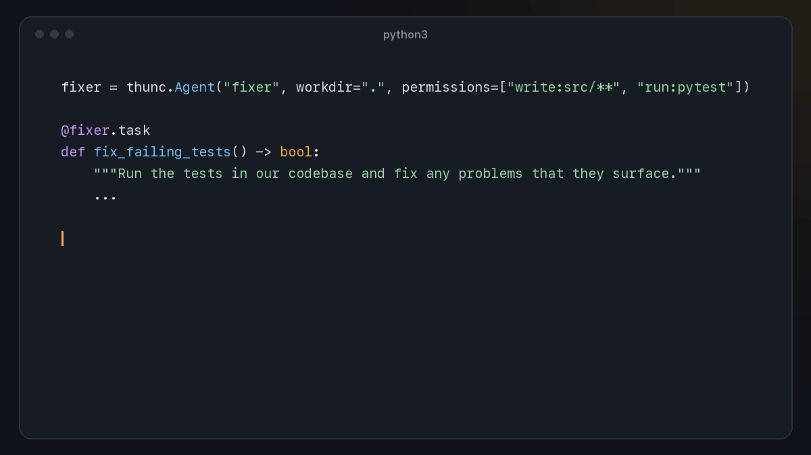

Call an LLM like a typed Python function.
The docstring is the prompt, the parameters are the inputs, and the return type is what you get back, checked. Runs on Claude, OpenAI, a local model, or your Claude Code or Codex login.
import thunc
@thunc.function
def urgency(ticket: str) -> int:
"""Rate how urgent this ticket is,
from 1 (can wait) to 5 (customer is blocked)."""
...
urgency("I was charged twice!")
# -> 4 # a checked intYour function is the prompt.
No prompt templates, no JSON schemas, no parsing code. Write the signature you want and call it.
The instructions the model follows. Or pass instructions= built in code.
The inputs, sent separately from the instructions as data, which blunts prompt injection.
What you get back, parsed and checked: bool, Literal, lists, dataclasses and more.
Dataclasses in, dataclasses out.
Return types nest, so messy text becomes a list[Item] you can use straight away. This is a real run.

Never a silent bad value.
- Every answer is validated against your return type. Dataclasses come back as real instances.
- Wrong answers get fixed. The problem is sent back to the model and it tries again.
- Loud when it can't. If the answer still doesn't fit, you get a
ThuncError. - Your own checks with
ensure=lambda n: 1 <= n <= 5, retried the same way. - Cache what should be stable.
cache=Trueasks the model once per input. - Zero dependencies. Standard library only; provider SDKs are optional extras.

Agents that hand back a typed answer.
Give an agent a folder and permissions. It lists, searches, reads, edits and runs commands, then finishes with a checked value of your return type.
fixer = thunc.Agent(
"fixer",
workdir=".",
permissions=["write:src/**", "run:pytest"],
)
@fixer.task
def fix_failing_tests() -> bool:
"""Run the tests and fix any problems that they surface."""
...See every call as it happens.
thunc watch runs your program with a live dashboard in the terminal: the calls waiting on a model, retries and why each reply was rejected, each agent's steps, and a report when it ends. Your program needs nothing added.
thunc watch support_inbox.py claude-code/sonnet 00:18.0 ● running
1 Overview 2 Agents 3 Calls 4 Summary
────────────────────────────────────────────────────────────────────────────────────────────
IN FLIGHT 4 running
⠙ draft_reply ticket="Password reset email never… attempt 1 4.2s ████████████
⠙ urgency ticket="Refund still not showing a… attempt 2 4.1s ██████████░░
⠙ draft_reply ticket="Where is order A-1043? It … attempt 1 3.1s █████████░░░
⠙ draft_reply ticket="Any plans for a public API… attempt 1 2.4s ███████░░░░░
FUNCTION CALLS CACHED RETRIES FAILED MEAN P95 MODEL RECENT
category 8 0 0 0 1.5s 2.5s 11.7s ▃▄▅█▆▇▃▄
urgency 7 0 1 0 2.4s 4.7s 16.9s ▂▄▄▆▃█▅
find_order 7 0 0 0 2.1s 3.4s 15.0s ▅▃█▇▇▅▄
draft_reply 4 0 0 0 3.6s 4.4s 14.5s ▆▆█▇
AGENTS 0 running
✓ repo-guide tests_for(feature="caching") finished · 6 steps 12.4s
ACTIVITY results per second, last 30s ▁▁▁▁▁▁▁▁▁▁▁▁▆▆▃█▃▃▆▃▆▃▆▃▆█▃▃▁▁ overlap 4.7x
EVENTS
17:38:11 ✓ urgency → 4 4.7s
17:38:12 ✓ find_order → None 2.7s
17:38:12 ✓ category → bug 1.1s
17:38:12 ✓ urgency → 3 2.4s
17:38:13 ✓ find_order → Order(id='A-1043') 1.8s
17:38:14 ✓ find_order → None 1.6s
17:38:15 ↻ urgency attempt 1: not valid JSON: 'high' 2.8s
────────────────────────────────────────────────────────────────────────────────────────────
↑↓ or click to select · ⏎ or click again to open p Pause f Failures ? Help q QuitFunctions that write themselves.
With write=True, a function writes its own body on its first call. The model drafts Python from the docstring, thunc checks it against the model's own answers and puts it into your file, and from then on it's plain Python with no model calls. Every change is a diff for you to review.
Experimental: it may change, or be removed, in a later release.
Read the thunc write guide@thunc.function(write=True)
def minutes(duration: str) -> int:
"""Convert a duration like '1h 30m',
'90 min' or '2 hours' to whole minutes."""
...def minutes(duration: str) -> int:
"""Convert a duration like '1h 30m',
'90 min' or '2 hours' to whole minutes.
>>> minutes('1h 30m')
90
"""
# Written by thunc from the docstring. Review it.
parts = re.findall(r"(\d+(?:\.\d+)?)\s*([a-z]+)", duration.lower())
...Runs on what you already have.
Choose per program, per function or per call. Mix them: a fast judgment model for decisions, a frontier model for writing.
backend="claude-code"Your local login. No API key, no SDK.
backend="codex"Your local login. No API key, no SDK.
thunc[anthropic]Native tool calls and prompt caching for agents.
thunc[openai]The Responses API, with native tool calls.
OPENAI_BASE_URLTested with LM Studio and gpt-oss-20b.
backend="jev"Yes/no, labels and ratings in about 0.3 s.
Prompts built in code.
When the prompt comes from a variable, a config file or a loop, call thunc.call with it. You still get typed, checked results, and thunc.map runs many at once.
text = thunc.call(f"Translate into {lang}.", {"note": note})
score = thunc.call(rubric, {"answer": answer}, returns=int)
scores = thunc.map(urgency, tickets, workers=8)Durable agents with Temporal
Recorded model turns, recoverable tool effects, reconnectable runs and explicit resolution of uncertain commands. Local calls keep their dependency-free runtime.